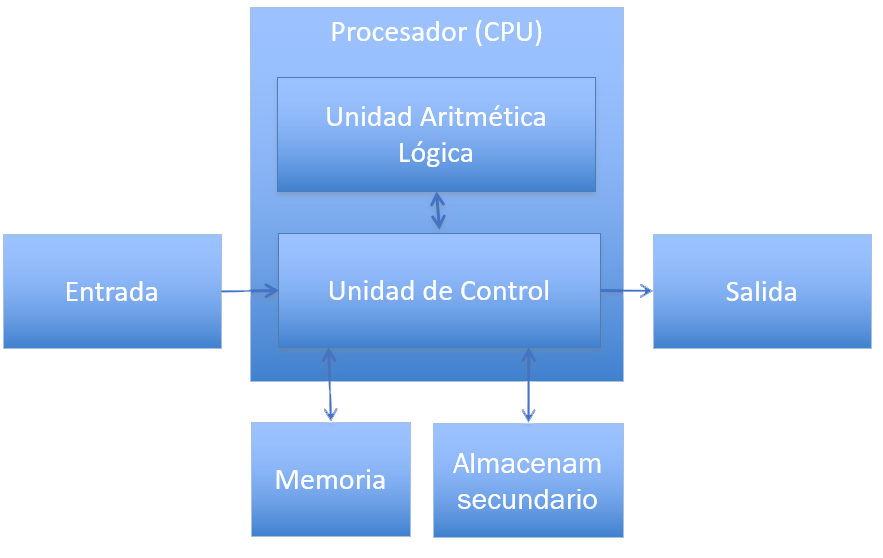

Resolución de Problemas con Computadoras
Introducción
Created by edme88
Computadora
- Procesa Datos
- Convierte datos en información
Computadora
Capacidad de:
- Aceptar una entrada
- Presentar una salida
- Almacenar información
- Ejecutar operaciones aritméticas o lógicas sobre los datos de entrada o de salida
Componentes

Datos e Información
Datos: Representación de algún hecho, concepto o entidad real
Información: Datos procesados y organizados
Introducción a la resolucón de Problemas
¿Cómo resuelven un problema (cotidiano)?
(Ej. atarse los cordones, cocinar un plato)
¿Usan algun método?
Metodología para la solución de Problemas basados en la Computadora
- Análisis del problema
- Diseño del algoritmo
- Codificación
- Prueba de escritorio
- Compilación y Ejecución
- Prueba y Depuración
- Interpretación de los resultados
- Documentación y Mantenimiento
1-Análisis del problema
- Comprender la naturaleza del problema
- Conocer los datos involucrados
- Determinar la información deseada como resultado del proceso
2- Diseño del Algoritmo
Definir la secuencia de pasos que se deben llevar a cabo para conseguir la salida identificada en el paso anterior.
Se puede expresar en forma gráfica mediante un diagrama de flujo ó en forma escrita mediante pseudocódigo.
3- Codificación
Expresar el diagrama de flujo ó pseudocódigo en un lenguaje de alto nivel
Escribir la solución del problema en una serie de instrucciones detalladas, en un código reconocible por la computadora.
4- Prueba de escritorio
Consiste en simular manualmente las operaciones que se indican en el programa.
Mediante una tabla se hace una traza de los valores que van tomando las variables hasta obtener los resultados.
Se puede aplicar en programas de poca complejidad.
5- Compilación y Ejecución
La computadora verifica si existen errores de sintaxis, y de no ser así produce un programa denominado objeto.
Luego se realiza el enlace o link donde se le incorporan las librerias necesarias para ejecutar las sentencias indicadas en el programa.
Se genera el programa.exe que puede ser ejecutado.
6- Prueba y Depuración
Descubrir, localizar y corregir los errores que hacen que un programa no se ejecute o que cuando lo hace obtiene resultados erróneos.
- Tipos de Errores:
- de Sintaxis: Uso incorrecto de reglas del lenguaje;
- de Ejecución: Operaciones correctas sintácticamente, pero que no pueden ser ejecutadas.
- Lógicos: No se obtienen los resultados deseados por problemas en el algorimo.
7- Interpretación de los Resultados
El usuario debe interpretar los resultados para ver si realmente son la solución del mismo.
8- Documentación y Mantenimiento
- Documentación para el usuario final:
- Descripción del Programa
- Descripción de los datos requeridos y los resultados obtenidos
- Descripción de los comandos y funciones
- Descripción de los mensajes de error
- Limitaciones del programa
8- Documentación y Mantenimiento
- Documentación técnica:
- Diseño global
- Descripción de las funciones y procedimientos
- Diagramas de flujo, descripción de las variables y módulos, etc
Introducción a los Algoritmos
¿Qué les parece que es un algoritmo?
¿Cómo lo definirían con sus palabras?
Algoritmo: Concepto
Es un método para resolver un problema, que consiste en la realización de un conjunto de pasos, procedimientos o acciones lógicamente ordenados tal que, partiendo de ciertos datos de entrada, permite obtener ciertos resultados que conforman la solución del problema.
Un determinado problema puede resolverse mediante más de un algoritmo. Aun si todos encuentran la solución correcta algunos serán mejores que otros.
Secciones o Módulos de un Algoritmo
- Ingreso de datos del Problema
- Procesamiento de Datos
- Impresión de Resultados

Ejemplo: Área del Rectángulo
- Qué datos debería ingresar el usuario?
- Que procesamiento se realizará sobre los datos?
- Cuál es el resultado esperado?
Características de los Algortimos
- Correcto: resuelve el problema
- Eficiente: en uso de recursos y tiempo
- Preciso: no ambiguo, la actividad a realizar en cada paso esta determinada completamente.
- Determinista: debe comportarse del mismo modo ante las mismas condiciones. Si se sigue dos veces en el mismo entorno, el resultado obtenido es el mismo.
- Finito: Tiene fin tras un número determinado de pasos.
Herramientas para la representación de un Algoritmo
- Diagrama de Flujo
- Diagramas N-S (Nassi-Schneiderman)
- Pseudocódigo
¿Dudas, Preguntas, Comentarios?